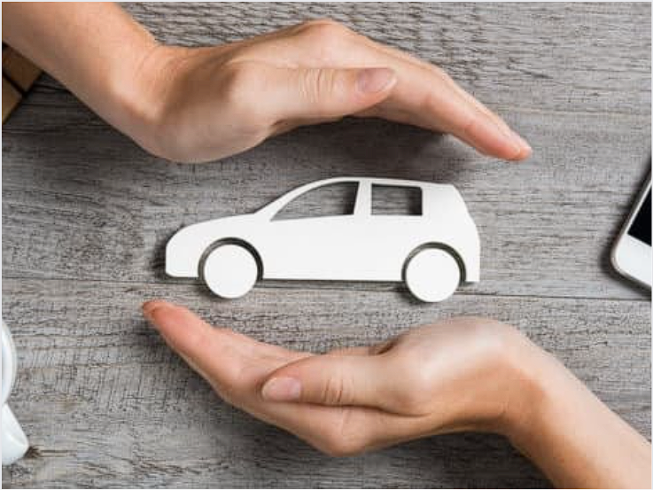
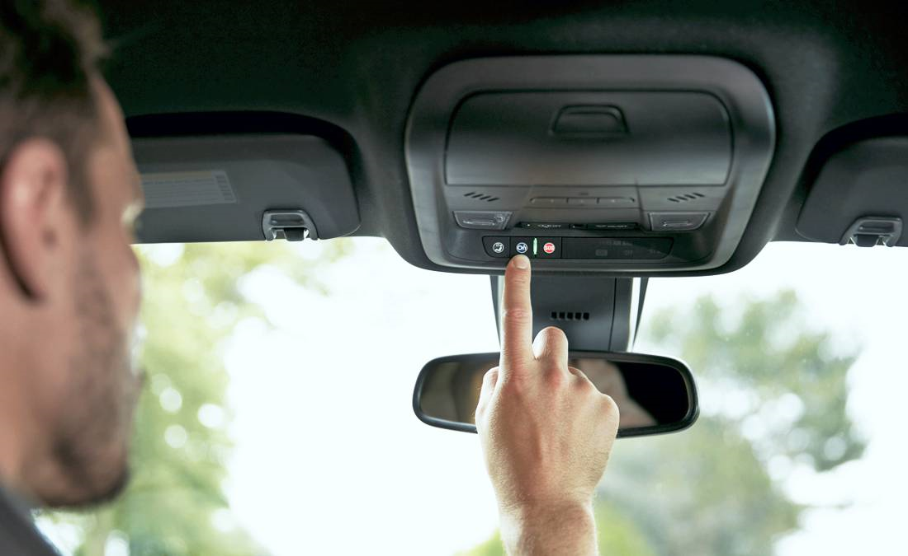
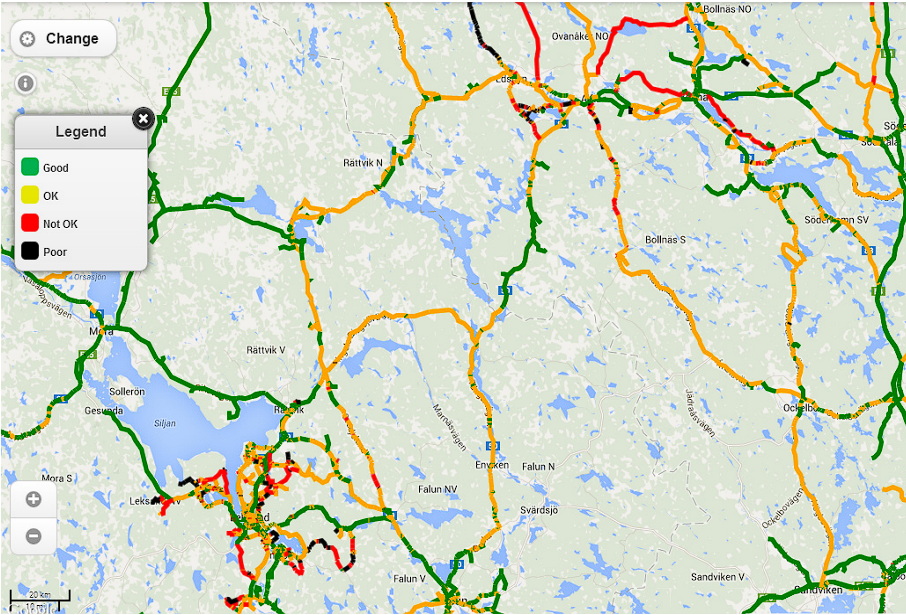
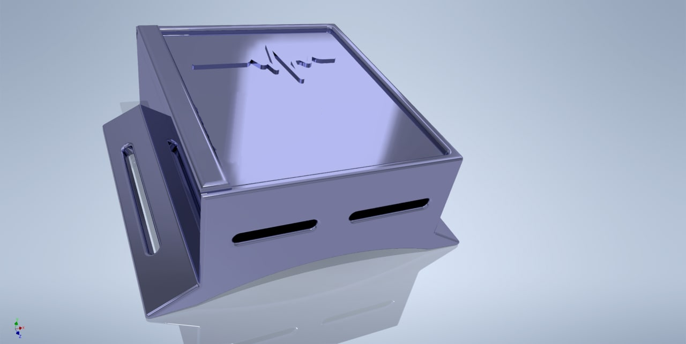
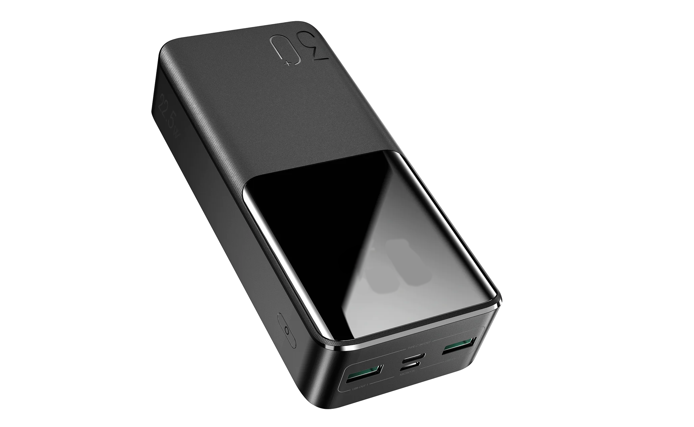

Que és Car Santé
Car Santé es una solución IoT con el propósito del cuidado y prevención de los automóviles, con sus avanzados sensores y potente procesador es capaz de generar alertas sobre las acciones a tomar con su vehículo.
El sistema cuenta con tecnología avanzada de análisis del trayecto que además de generar alertas sobre el mantenimiento del carro permite notificar el trayecto con la menor cantidad de daños en la vía y cuidar su vehículo.

Tecnología Inovadora
Tecnología innovadora de detección de los trayectos malos y implementación de un sistema integrado.
No invasivo
Sistema no invasivo, a diferencia de otras soluciones este dispositivo solamente se debe instalar
pegándolo a una parte del coche y conectándolo por USB, no es necesario ninguna mofidicación del vehículo.
Accesible
Cómodo y fícil de usar para todos los tipos de usuarios.
quienes somos
Somos estudiantes de ingeniería electrónica que percibimos el problema del cuidado del carro y quiere tomar acciones, con nuestra experiencia y perseverancia buscamos mejorar la vida de las personas que no tienen los conocimientos necesarios para cuidar su vehículo.
Telefóno: 55-5555-555
quienes somos
Somos estudiantes de ingeniería electrónica que percibimos el problema del cuidado del carro y quiere tomar acciones, con nuestra experiencia y perseverancia buscamos mejorar la vida de las personas que no tienen los conocimientos necesarios para cuidar su vehículo.
Telefóno: 55-5555-555
producto
Car santé es un producto aproximadamente del tamaño de una mano, en esta caja se encuentran componentes de alta tecnología que permite tomar el movimiento y la posición del carro para tener un registro del uso y sus momentos de mantenimiento.

visión
Como empresa, nuestra visión es desarrollar un dispositivo IoT de alta calidad que permita a los propietarios de vehículos cuidar y monitorear sus carros de manera más eficiente. Creemos que nuestro dispositivo de IoT debe ser fácil de usar, confiable y proporcionar una experiencia de usuario excepcional.

misión
La misión de nuestra empresa es diseñar y fabricar un dispositivo de IoT para el cuidado del carro que brinde a los propietarios de vehículos la capacidad de monitorear y cuidar sus carros de manera más efectiva. Nos esforzamos por crear un dispositivo de IoT f´cil de usar y confiable que permita a los propietarios de vehículos mantener sus carros en óptimas condiciones y prolongar su vida útil.

Avance
Car santé cuenta con un sofisticado sistema de adquisición de la carretera, con sus sensores es capaz de detectar defectos en la vía y registrarlos para evitarlos en circulaciones posteriores.

producto
Car santé es un producto aproximadamente del tamaño de una mano, en esta caja se encuentran componentes de alta tecnología que permite tomar el movimiento y la posición del carro para tener un registro del uso y sus momentos de mantenimiento.
visión
Como empresa, nuestra visión es desarrollar un dispositivo IoT de alta calidad que permita a los propietarios de vehículos cuidar y monitorear sus carros de manera más eficiente. Creemos que nuestro dispositivo de IoT debe ser fácil de usar, confiable y proporcionar una experiencia de usuario excepcional.
misión
La misión de nuestra empresa es diseñar y fabricar un dispositivo de IoT para el cuidado del carro que brinde a los propietarios de vehículos la capacidad de monitorear y cuidar sus carros de manera más efectiva. Nos esforzamos por crear un dispositivo de IoT f´cil de usar y confiable que permita a los propietarios de vehículos mantener sus carros en óptimas condiciones y prolongar su vida útil.
Avance
Car santé cuenta con un sofisticado sistema de adquisición de la carretera, con sus sensores es capaz de detectar defectos en la vía y registrarlos para evitarlos en circulaciones posteriores.